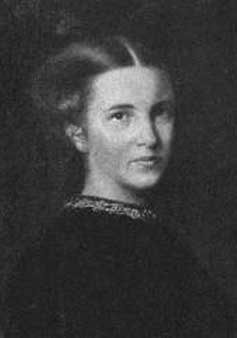

About EGA and the EGAH: A Short History
1865Started her practice from home, qualifying as an apothecary with the LSA
1866Opened St Mary's Dispensary for Women and Children
1870Appointed Visiting Medical Officer East London Hospital for Children (March)
1870Gained MD in Paris (June)
1870Elected to the London School Board (November)
1870Active in fundraising for Girton College
1870Became a founder member of the National Women's Suffrage Society
1871Married (February)
1872Started the New Hospital for Women
1873First daughter born
1874Elected to the British Medical Association
1874Second daughter born (d.1875)
1874Was refused membership of the Obstetrical Society
1874Moved Hospital to Marylebone Rd
1874Co-Founder of London School of Medicine for Women (LSMW)
1877Held Charity Concert for New Hospital for Women (2.3.77)
1877Son born (9.3.1877)
1877Inaugural speech for LSM for Women
1878London University agreed to award medical degrees to women
1883Dean of LSMW
1888Campaign to raise money for new building for New Hospital for Women
1889Foundation stone laid for the new bulding in Huntley Street (7.5.89)
189042 Beds open - �21,000 raised by EGA to do this
1892Gave up surgery at New Hospital for Women
1897Further building to extend London School of Medicine for Women
1898Elected president of East Anglian branch of the BMA
1898Grand opening of LSMW with the Prince of Wales raised �4000. 250 women doctors were present (July)
1898LSMW was granted a Royal Charter and became the London (Royal Free Hospital) School of Medicine for Women (August)
1902Garrett Anderson retired as Dean, and was made President of the Royal Free Hospital School of Medicine
1917Elizabeth Garrett Anderson died
1918New Hospital for Women renamed the Elizabeth Garrett Anderson Hospital
A fuller history is available on Wikipedia.